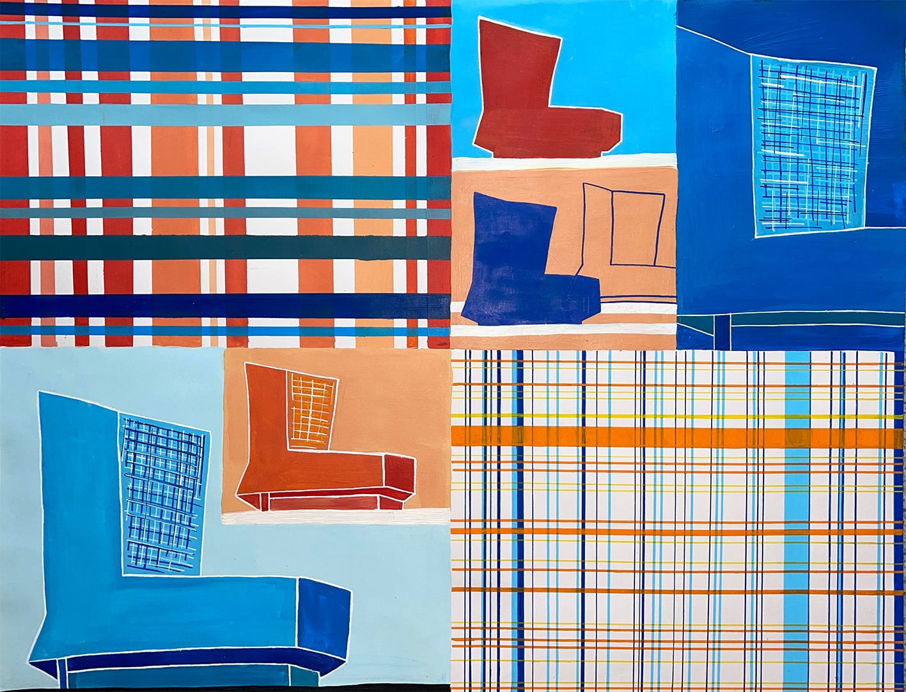
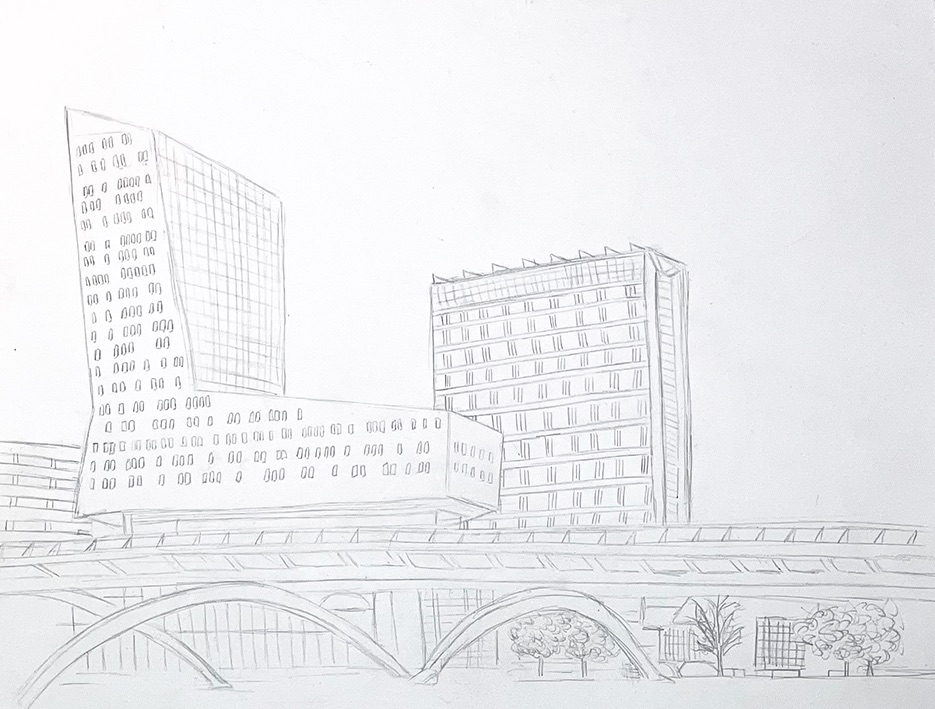
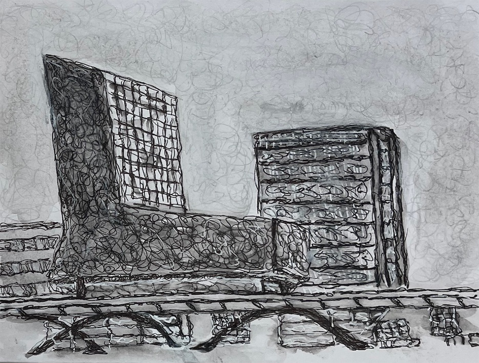
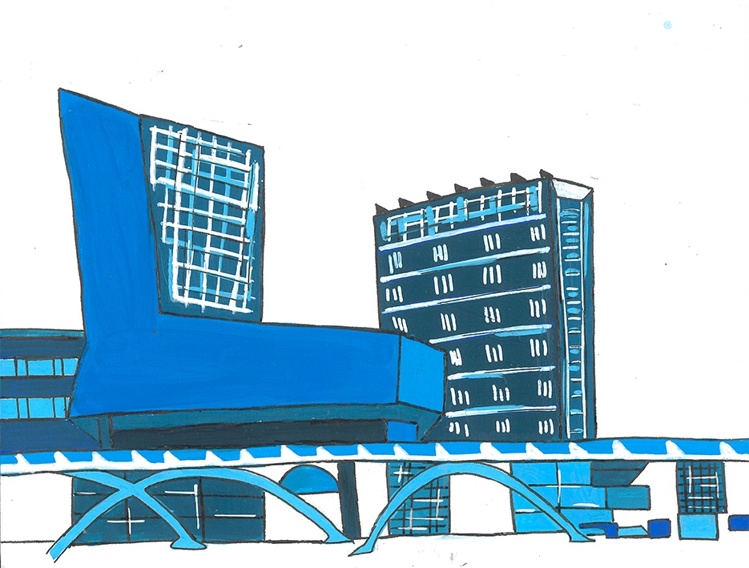
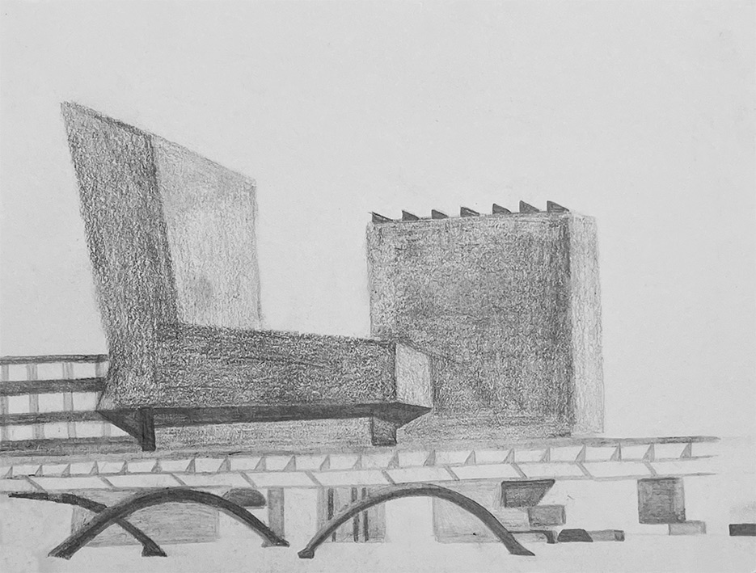
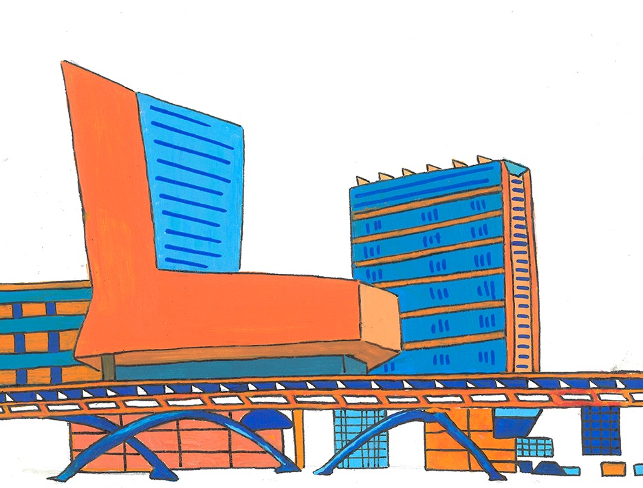
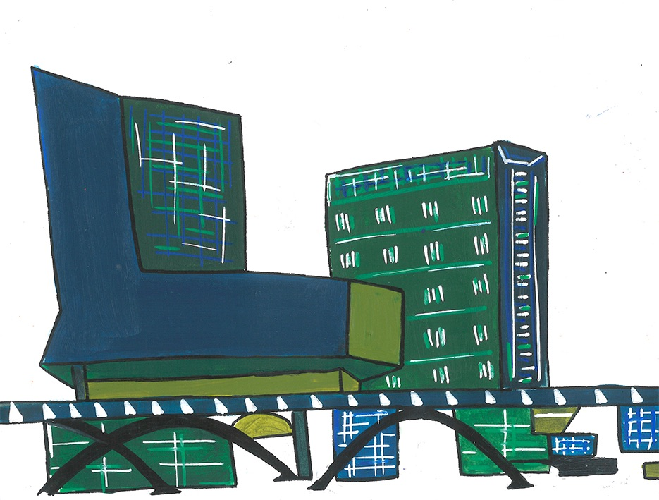
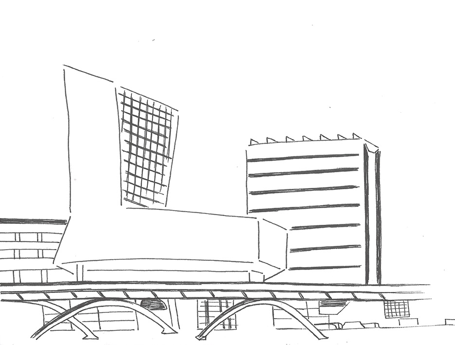
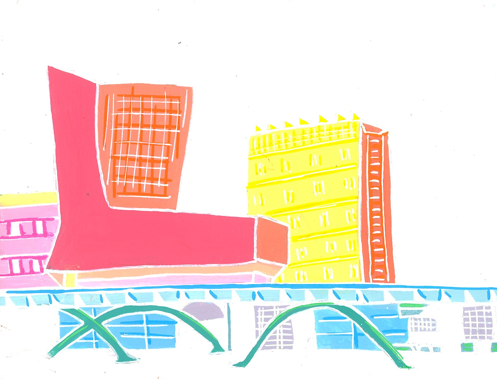
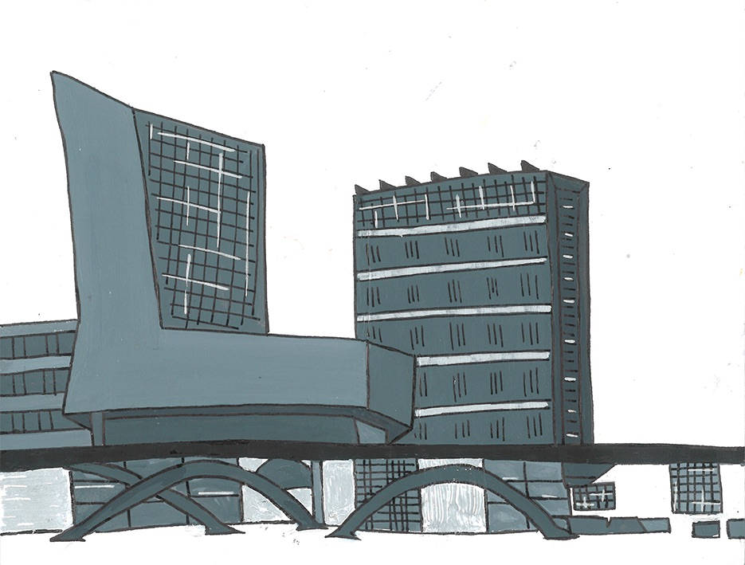

Parc Henri Matisse, Lille
Série de dessins au format variable à l’aide de différents mediums
Ce parc où je pouvais passer des après-midis complètes avec mes copines à parler de tout et de rien,
Ce parc où j’attendais mes amis sortir de la gare après ne pas les avoir vu durant plusieurs mois,
Ce parc où il y a ce banc avec ces arbres qui nous envahissaient,
Ce parc où je suis partie en courant lorsque la police est arrivée durant le confinement,
Ce parc où on regardait cet habitué donner à manger aux pigeons,
Ce lieu de mes années de lycée qui contient de nombreux souvenirs mais auquel je n’ai jamais vraiment prêter attention.









